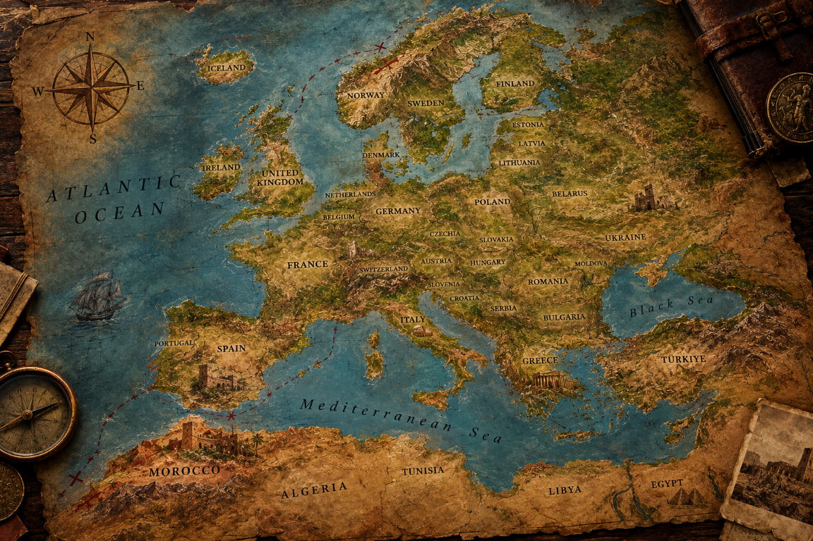
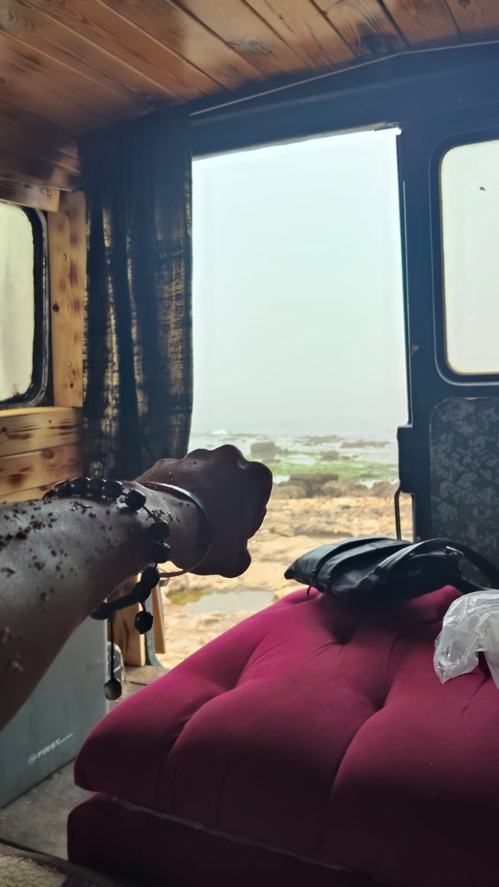
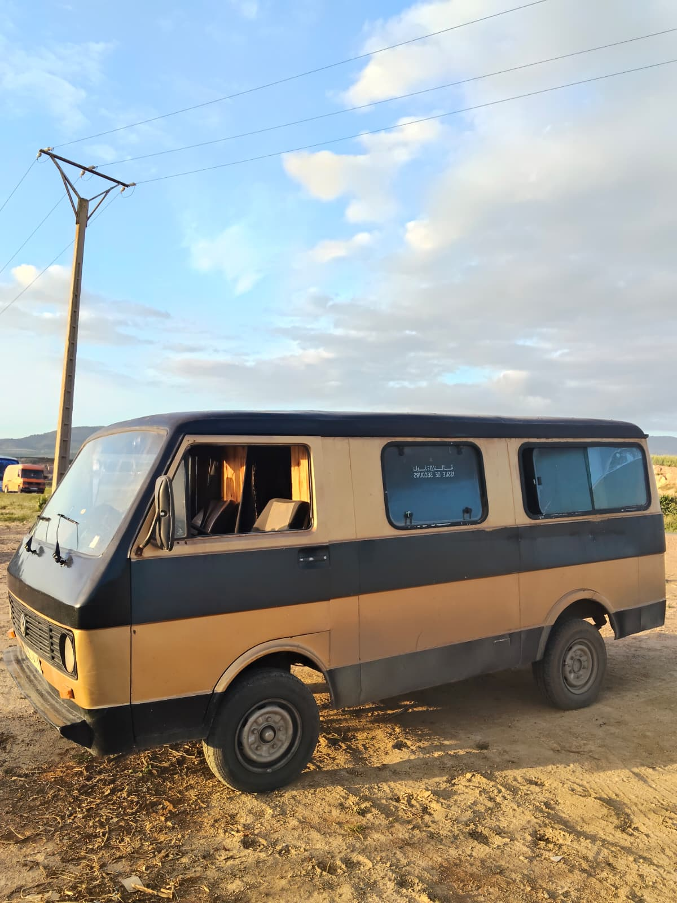
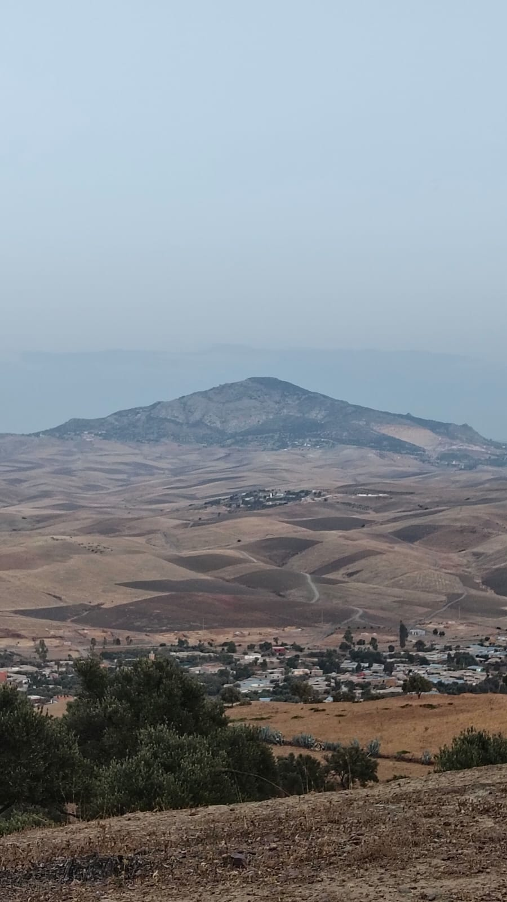
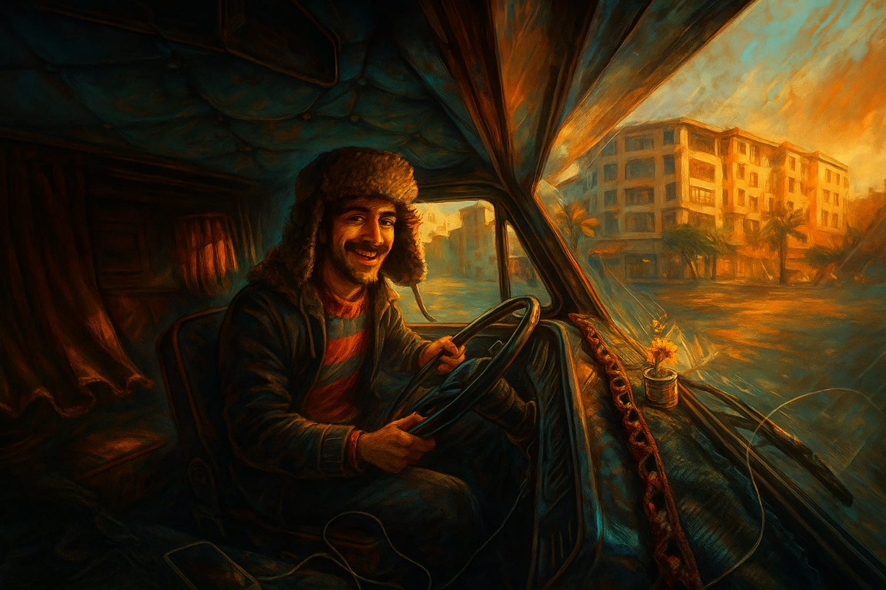

La carretera también puede ser casa.
Ventanas abiertas al Atlántico, caminos que cambian de color y la calma de viajar sin prisa. Este diario reúne fotos de carretera y una ruta inspiradora entre España y Marruecos: una invitación a descubrir paisajes, no un itinerario en tiempo real.
02 / VIAJE EN SOLITARIO
Mi viaje en solitario
Un viaje en solitario, ciudad a ciudad. Selecciona un punto para ver su foto.

RUTA EN SOLITARIO
03 / POSTALES DE CARRETERA
Pequeñas ventanas.
Pequeñas ventanas.
Grandes horizontes.
Momentos capturados en las fotos del viaje: la furgo, el paisaje y esa luz que invita a seguir.




Menos prisa.
Más vida entre destinos.
Respeta los lugares, duerme donde esté permitido, apoya a los comercios locales y deja cada paisaje mejor de como lo encontraste.
VOLVER A LA AVENTURA